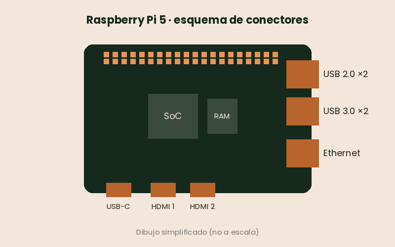

Características principales
- Procesador
- Broadcom BCM2712, cuatro núcleos Arm Cortex-A76 de 64 bits a 2,4 GHz
- Gráficos
- VideoCore VII, dos salidas de vídeo 4K a 60 Hz
- Memoria RAM
- LPDDR4X, según el modelo: 2, 4, 8 o 16 GB
- Almacenamiento
- Tarjeta microSD (y disco NVMe opcional a través de PCI Express 2.0)
- Alimentación
- USB-C de 5 V y 5 A
Más información en la página oficial del fabricante (se abre en una pestaña nueva).
Conectores

- 2 puertos USB 3.0 y 2 puertos USB 2.0
- Ethernet Gigabit
- Wi-Fi de doble banda (802.11ac) y Bluetooth 5.0
- 2 salidas micro HDMI
- Conector GPIO de 40 pines
- Botón de encendido
Puesta en marcha
- Grabar el sistema operativo en la tarjeta microSD con Raspberry Pi Imager.
- Insertar la tarjeta y conectar el cable de red, el monitor y el teclado.
- Conectar la fuente de alimentación USB-C oficial.
- Completar el asistente de primer arranque y actualizar el sistema.
Si algo falla, vuelve a la lista de conectores y comprueba los cables.
Datos de inventario
- Ubicación
- Aula de ASIR, armario de redes
- Uso
- Prácticas de servidores web y DNS
- Responsable
- Marco Collado Penalba